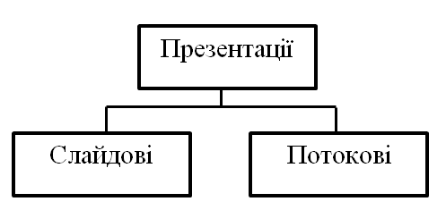

Word
Інтерфейс, функціональні можливості Microsoft Word
Основна мета використання текстового процесора — це створення оформленого належним чином текстового документа. Текстовий процесор Microsoft Word має дуже широкий спектр можливостей для створення, оформлення та опрацювання документів.
До його основних функцій належать:
- організація введення й редагування тексту за допомогою клавіатури та збереження його в пам’яті;
- форматування тексту (оформлення тексту, зміна його параметрів);
- опрацювання декількох документів одночасно;
- попередній перегляд перед друком та друкування документів;
- перевірка правопису;
- використання графічних зображень у тексті;
- використання таблиць у тексті;
- використання макросів у документах та ін.
Розглянемо командні вкладки Word:
- Вкладка "Головна" містить команди, пов’язані з буфером обміну, вибором шрифтів, настроюваннями абзацу, стилями й виправленням.
- Вкладка "Вставка" містить інструменти для додавання сторінок, таблиць, ілюстрацій, посилань, заголовків, колонтитулів, текстових об’єктів і символів у документ.
- Вкладка "Розмітка" страницы містить команди для роботи з темами, фоновими зображеннями й інтервалами між абзацами в документі. Крім того, тут можна настроювати параметри сторінки й порядок розташування елементів на сторінці.
- Вкладка "Посилання" містить спеціальні елементи, що використовують при створенні об’ємних, складних документів, статей, наукових праць і т.п.: зміст, виноски, цитати й бібліографії, заголовки, предметний покажчик.
- Вкладка "Розсилка" – нововведення в інтерфейсі Office Word 2007. Тут можна знайти все, що необхідно при створенні, попередньому перегляді й злитті пошти.
- Вкладка "Рецензіювання" містить всі команди, необхідні для перевірки (орфографія, тезаурус і т.д.) документа й надання до нього доступу іншим користувачам з метою перегляду. Тут також є команди для додавання коментарів, відстеження й обробки змін, порівняння версій і захисту документа.
- Вкладка "Вид" містить все необхідне для відображення документа різними способами, починаючи з базових подань документа й закінчуючи набором засобів відображення для роботи з лінійками й сітками, а також для роботи з декількома документами в декількох вікнах.
- Вкалдка "Розробник" містить інструменти для роботи з макросами, шаблонами і XML-файлами.
- Вкладка "Налаштування" містить інструменти надбудов над додатками Microsoft Office.
Під командними вкладками розміщується робоче поле, що обмежене зверху і зліва лінійками. Лінійки показують положення курсора на сторінці, поля сторінки; крім того, за допомогою бігунків, що знаходяться на горизонтальній лінійці можна задавати відступи тексту, відступ першої стрічки абзацу.
Внизу вікна програми міститься стрічка стану, в лівій частині якої відображаються номер поточної та кількість сторінок в документі, число слів, мова введення, індикатор режиму запису макросу. В правій частині стрічки стану знаходяться ярлики режимів перегляду, повзунок маштабу відображення документу.
Стрічка стану може містити і інші елементи, для їх включення здійснюється задопомогою контекстного меню.
Командні вкладки, групи команд, запуск діалогових вікон, контекстні інструменти, галереї, інтерактивний попередній перегляд, налаштування програми.
Подробніше: Тут
PowerPoint
Основні поняття
Презентація (англ. presentation - представлення) – це захід, на якому відбувається представлення чого-небудь нового: ідеї, проекту, продукції, товару тощо.
Раніше для демонстрації презентацій використовувались виготовлені з паперу схеми, плакати, таблиці, карти. Потім з’явились технічні засоби, такі як діапроектори – відтворювали зображення з фотоплівок та діапозитивів; та графопроектори (кодоскопи) – відтворювали зображення з прозорих плівок (слайдів або транспарантів), розміром близьких до А4 формату.
На початку 1980-х років для друку діапозитивів та плівок почали використовувати комп’ютерні програми; згодом, з розвитком комп’ютерної техніки, почали створювати спеціальні електронні документи для демонстрації свого виступу на екрані комп’ютера. Ці документи отримали назву комп’ютерних презентацій.
Комп’ютерна презентація – це документ, який використовують для подання широкій аудиторії інформації в наочному і лаконічному вигляді. В наш час для демонстрації комп’ютерних презентацій використовують комп’ютери, мультимедійні проектори, мультимедійні та інтерактивні дошки тощо.
Для створення комп’ютерних презентацій використовують засоби презентаційної графіки – спеціальні програми, призначені для створення зображень та їх показу на екрані, підготовки слайд-фільмів, мультфільмів, їх редагування.
Комп’ютерні презентації бувають двох видів: слайдові та потокові (рис.).

Слайдова презентація розробляється і демонструється як послідовність слайдів, що по черзі відтворюються за вказівкою користувача.
Слайд – це окрема екранна сторінка, яка може містити текстові, графічні, відео- , звукові об'єкти та гіперпосилання.
Потокова презентація — це набір кадрів, які відтворюються автоматично, змінюючи один одного через чітко визначені проміжки часу.
По своїй суті слайдова презентація нагадує набір фотографій, а потокова – кінофільм.
Засоби створення потокових презентацій мають більш потужні можливості – це і створення анімаційних зображень, мультфільмів, відеороликів, ігр тощо. Натомість основною перевагою слайдових презентацій є простота їх створення та легкість в керуванні відтворенням, тоді як для налаштування відображення потокових презентацій потрібно створювати спеціальні кнопки, стоп-кадри, володіти основами програмування.
До засобів створення слайдових презентацій відносять: Microsoft Office PowerPoint, OpenOffice.org Impress, Powerbullet Presenter, ProShow Producer, PPT CRE ATE, Quick Slide Show, MySlideShow.
Засоби створення потокових презентацій: Adobe Flash, Microsoft Movie Maker, Macromedia Flash, AnFX Visual Design, Virtual Tour Builder.
Основні можливості засобів презентаційної графіки:
- Редагування та форматування об’єктів презентації;
- Використання шаблонів і стилів оформлення слайдів;
- Застосування ефектів анімації до об’єктів презентації;
- Налаштування послідовності та тривалості відображення об’єктів;
- Демонстрація створеної презентації;
- Підготовка до друку слайдів презентації;
- Збереження презентації у файлах різних форматів.
Microsoft Word:Word
Microsoft PowerPoint:PowerPoint
Наверх